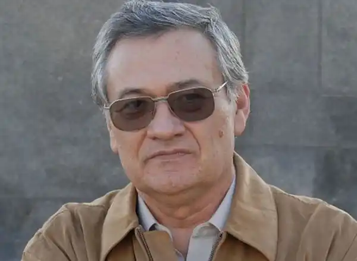
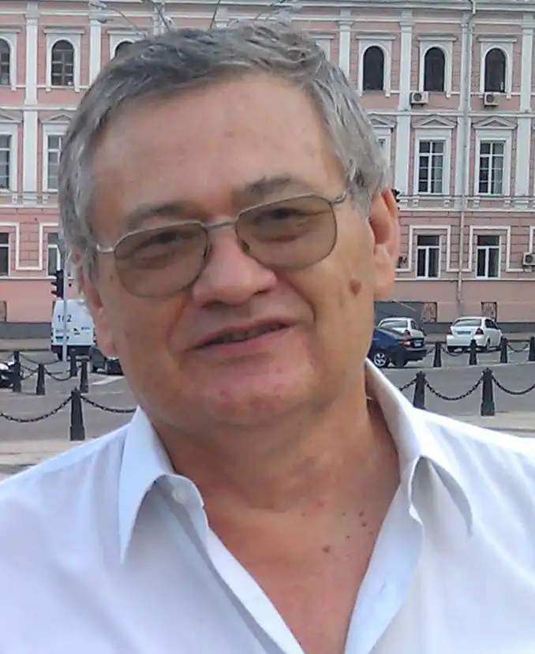

Народився 29 жовтня 1949 в м. Берегове Закарпатської області.
Вищу освіту здобув у 1966—1971 в Київському державному університет імені Тараса Шевченка на факультеті кібернетики.
1998—2001 — завідувач кафедри міжнародних комунікацій та зв'язків з громадськістю Київського національного університету імені Тараса Шевченка. З липня 2002 — керівник Управління стратегічних ініціатив в Адміністрації Президента України; працював завідувачем кафедри інформаційної політики в Національній академії державного управління при Президентові України. Член Спілки письменників України (з 1981). Почесний професор Українсько-американського гуманітарного інституту "Вісконсинський міжнародний університет (США) в Україні" (2011). Заслужений журналіст України (1999). Нагороджений орденом "За заслуги" 1-го (2021), 2-го (2015) і 3-го (2004) ступенів. Георгій Почепцов працює на кафедрі соціальних комунікацій філологічного факультету Маріупольського державного університету. Автор низки книг для дітей та юнацтва, зокрема фантастичних, серед яких найбільш відома трилогія повістей "Золота куля".